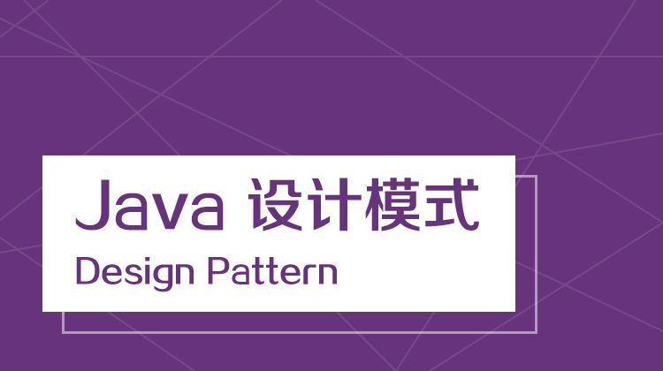

设计模式

面向对象设计五大心法（The Heart）
- The Single Responsibility Principle(单一职责原则)——SRP
- The Open Closed Principle(开放封闭原则)——OCP
- The Liskov Substitution Principle(Liskov替换原则)——LSP
- The Interface Segregation Principle(接口隔离原则)——ISP
- The Dependency Inversion Principle(依赖倒置原则)——DIP
SOLID = High Conhesion Loose Couple
单一职责原则
6 Responsibilities of Object
- Information holder
作为存储对象并提供对象信息给其他对象 - Interfacer
在系统的各部分之间转化信息（或请求） - Structurer
维护对象之间的结构关系 - Service provider
执行工作处理并提供给其他对象 - Controller
控制决策一系列的任务处理 - Coordinator
不作工作处理，只代理工作到其它对象上。
Rectangle Class Design Question
拆成两个部分，命令行应用程序只管计算，变化朝着依赖的反方向传递，永远要依赖于比较稳定的东西，之所以强调于依赖抽象，是因为抽象更加稳定。
SRP:What is Responsibility?
Responsibility = “a reason for change.”
Modoem Non-SRP Design
Extract Class
某个类做了应该由两个类做的事情，建立一个新类，将相关的值域和函数从旧类搬移到新类
CalculateRent()函数怎么写(没必要赌需求，哈哈哈，等需求来的时候再作设计，第一版怎么简单怎么写)
开放封闭原则
重构的基本招式
Rename
为什么要做Rename重构，软件生命周期的成本包含需求、设计、实现、测试和维护，其中维护占比最大。
为名字加上单位
- Start(int delay) --> Start(int delay_secs)
- CreateCache(int size) --> CreateCache(int size_mb)
- ThrottleDownload(float limit) --> ThrottleDownload(float max_kbps)
- Rotate(float angle) --> Rotate(float degrees_cw)
附带其他重要属性
- password --> plaintext_password 纯文本密码，需要加密
- comment --> unsecaped_comment 用户输入，需要转义
- html --> html_utf8 已经转换为UTF-8的html
- data --> data_urlenc 以url方式编码的数据
All articles in this blog are licensed under CC BY-NC-SA 4.0 unless stating additionally.
 wechat
wechat alipay
alipay